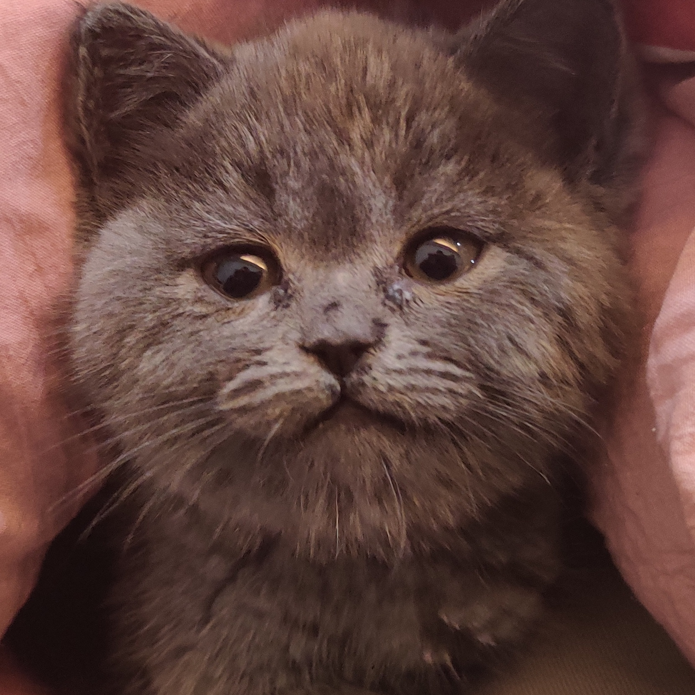

Changhong Yang(阳常鸿)
Master student
University of Virginia
Github
About
I am currently a Master student at University of Virginia, major in Compurter Engineering. Before that,
I received my Bachelor's degree in Mathematics and Computer Science from University of Illinois
Urbana-Champaign(UIUC). I am interested in the interaction between Machine Learning and Computer
Systems.
Changhong Yang
Last updated: May.26, 2022